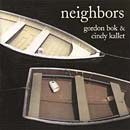

Reviews of Gordon Bok's Music
- Gordon Bok in Concert
- Apples In the Basket
- Neighbors
- Harbors of Home
- Schooners Review from Amazon.com
- In the Kind Land - Scott Alarik / WBUR-FM ...Text and Recorded Review
- Cornell Univ. Concert
- Almost Acoustic
- Big Muddy Folk Festival
- Assorted Reviews
- Support The Arts
Neighbors
by Gordon Bok and Cindy Kallet
Review by Bob Hartman-Berrier
April 1997
Reprinted from Northern Journey Online Journal
Copyright © 1997 Bob Hartman-Berrier (rberrier@webgard.esslink.com) Reprinted with permission
Neighbors, by Gordon Bok and Cindy Kallet, 1996
Timberhead C008
Available through Timberhead Music and by phone from Timberhead Music 207-236-2707
Neighbors is one dandy album. Many of you are familiar with Gordon Bok, whose deep, dark voice conveys nuances of expression and meaning which can change the meaning of a song from one listening to the next; fewer of you may be familiar with Cindy Kallet, who also has a dark and smoky timbre to her voice and who is the perfect foil and collaborator for Bok.
Neighbors is an album of contrasts, differences and similarities: traditional songs and contemporary ones; instrumentals and vocals; songs of action and songs of inwardness and contemplation; songs of melancholy and tunes of frivolity; expressions of tonality.
Bok and Kallet are both from Maine. Both sing traditional and contemporary songs, and both have exquisite taste in the choice of their material as well as in the presentation of it. Gordon plays 12-string and nylon-strung 6-string guitar as well as the cellamba, while Cindy plays primarily a steel-strung 6-string guitar, playing also drum, viola and nylon-strung guitar on various songs. They do one unaccompanied song ("Right Said Fred").
The decision by Bok and Kallet to make this album together will be a popular one. It will bring Cindy more exposure, and it adds new dimensions to Bok (as if he needed any...) Vocally they complement each other - their harmonies and phrasing are exquisite - and instrumentally they provide balance and ballast between Gordon's deep cellamba and 12 string and Cindy's brighter and higher 6-string. Cindy's singing of "The October Song" (by Robin Williamson of The Incredible String Band) backed by Gordon on cellamba and viola has a tonal texture like a Harney's lapsang souchong tea or a 18-year old Glenmorangie scotch. Unforgettable. The instrumental "Frolic (for Guitar and Small Elephant)" with Cindy on 6-string and Gordon on cellamba will make you smile!
Of particular interest to readers of this website (for Canadian content) are "Farewell to Nova Scotia" and "King Jim/Thanxty Al Stanley". To this reviewer, "Farewell to Nova Scotia" is worth the price of the album - it is done not as a march, an up-tempo piece, but as a lament, a dirge, a song of parting. The tempo is slowed down, and impact is added by Bok's use of passing diminished and seventh'ed chords while Bok and Kallett continue to sing in the major. "King Jim/Thanxty Al Stanley" are tunes written by Gordon and dedicated to and named for James Stewart of New Brunswick and Al Stanley from Prince Edward Island.
Read a review of "Harbors of Home", written by Kevin McCarthy in May 1999.